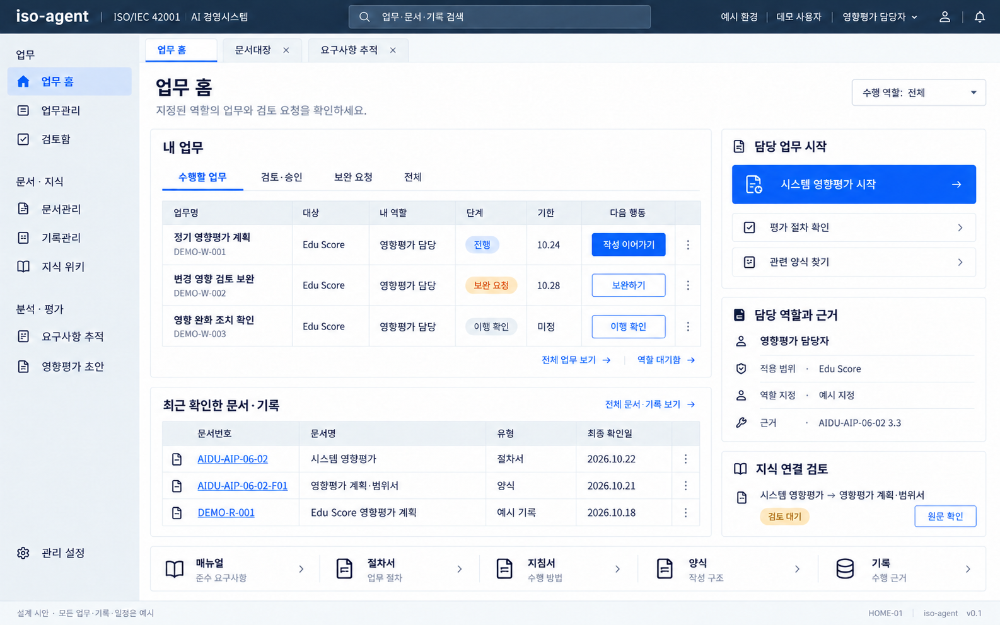
HOME-01
내용 재구성 · 4절의 Q&A·업무 도구·지식 검토 홈으로 변경
업무 홈
지정된 기능상 역할의 내 업무, 업무 시작, 근거와 최근 문서를 한 화면에 배치합니다.
원본 크기로 보기 ↗A의 공통 ERP 틀 · B의 업무 홈 · C의 검토 상세. 아래 17개 이미지는 확장형 ERP 참고본이며 각 화면에 v0.3 MVP 적용 범위를 표시했습니다.
최신 MVP는 UI 설계서 v0.3의 4절·8절 와이어프레임과 14절 적용 범위를 따릅니다. 기존 이미지의 업무 배정·결재는 후속 범위입니다. 화면 속 업무·기록·일정은 예시이며 이미지를 누르면 원본을 볼 수 있습니다.

내용 재구성 · 4절의 Q&A·업무 도구·지식 검토 홈으로 변경
지정된 기능상 역할의 내 업무, 업무 시작, 근거와 최근 문서를 한 화면에 배치합니다.
원본 크기로 보기 ↗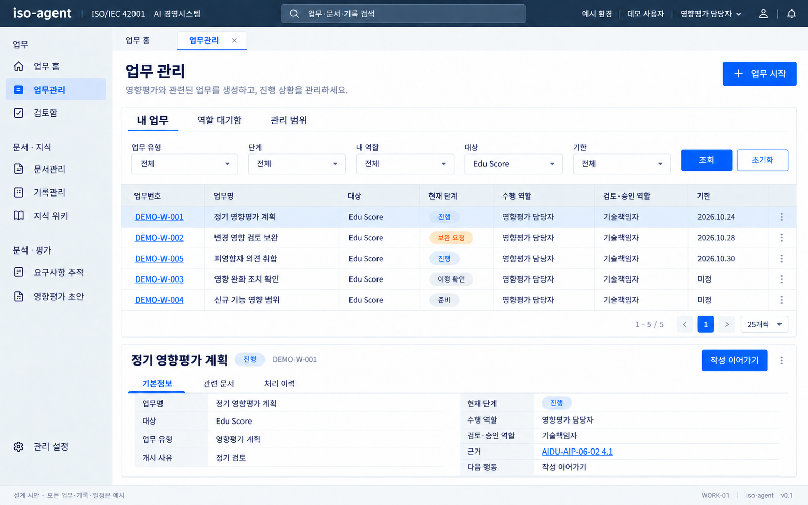
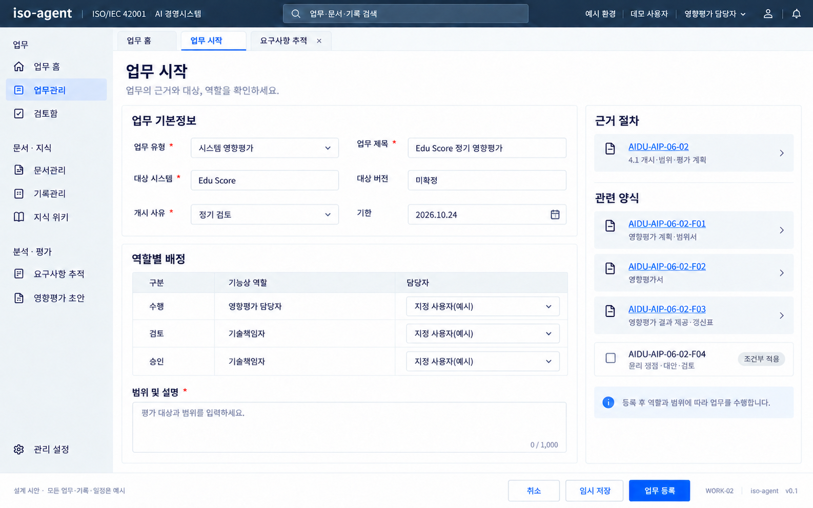
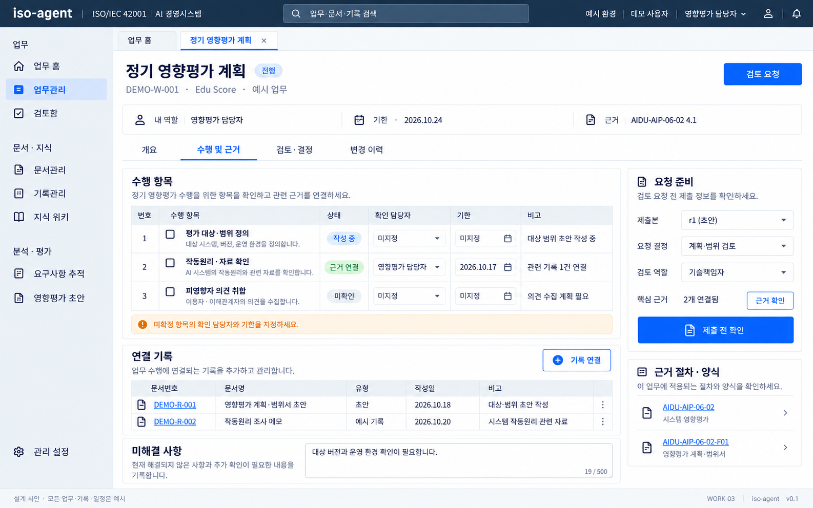
후속 전용 · 수행 상세·제출본·검토 요청은 MVP 제외
단계별 수행 내용과 실제 기록·근거를 연결하고 특정 제출본의 검토를 요청합니다.
원본 크기로 보기 ↗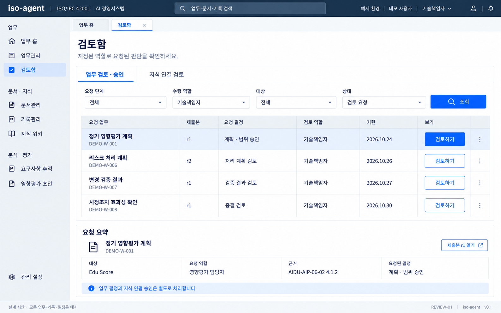
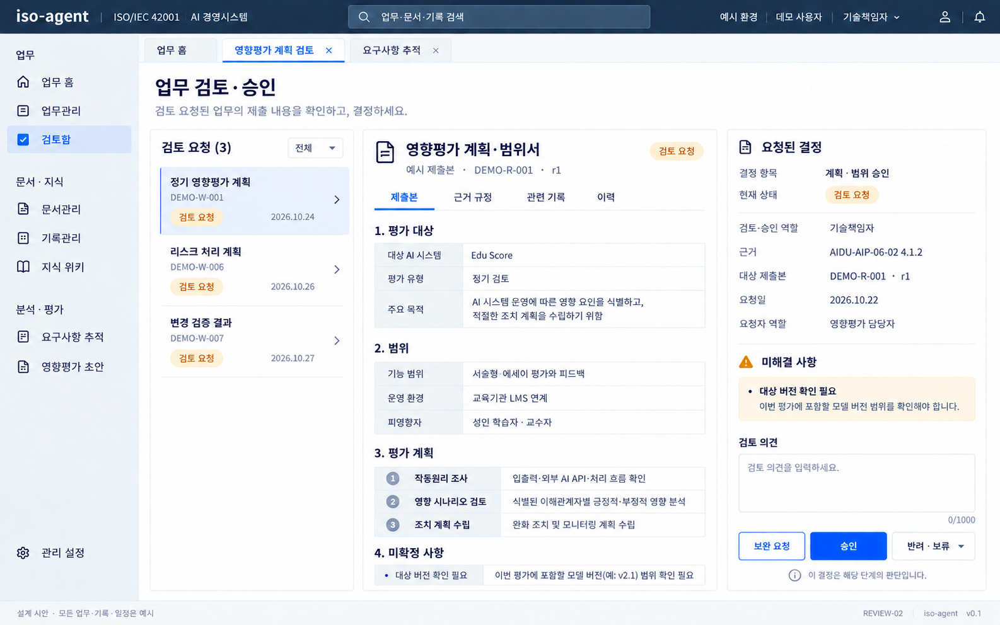
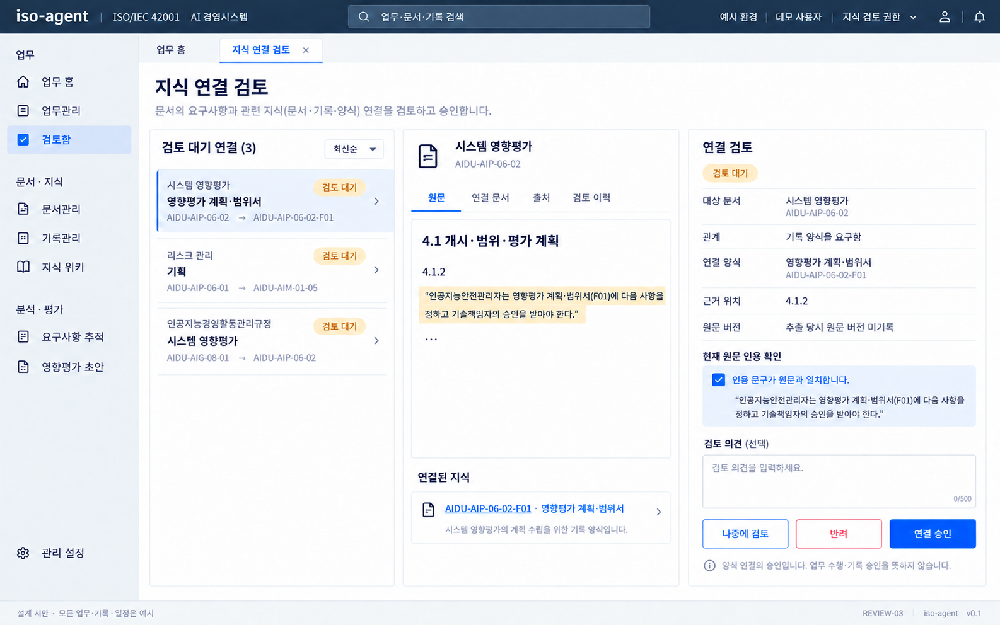
배치 재사용 · 6.4~6.6의 지식 연결 검토 적용
원문 인용과 지식 연결의 의미·방향을 확인합니다. 업무 승인과 별개의 화면입니다.
원본 크기로 보기 ↗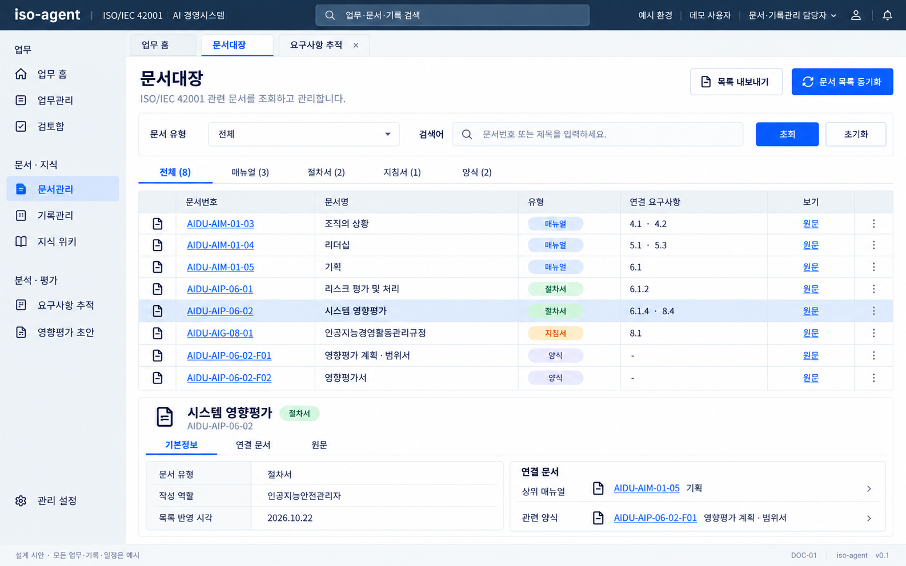
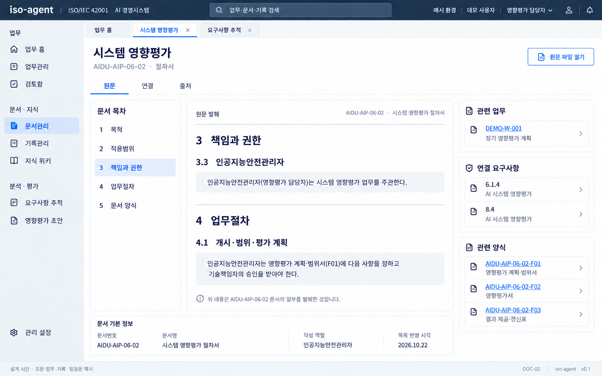
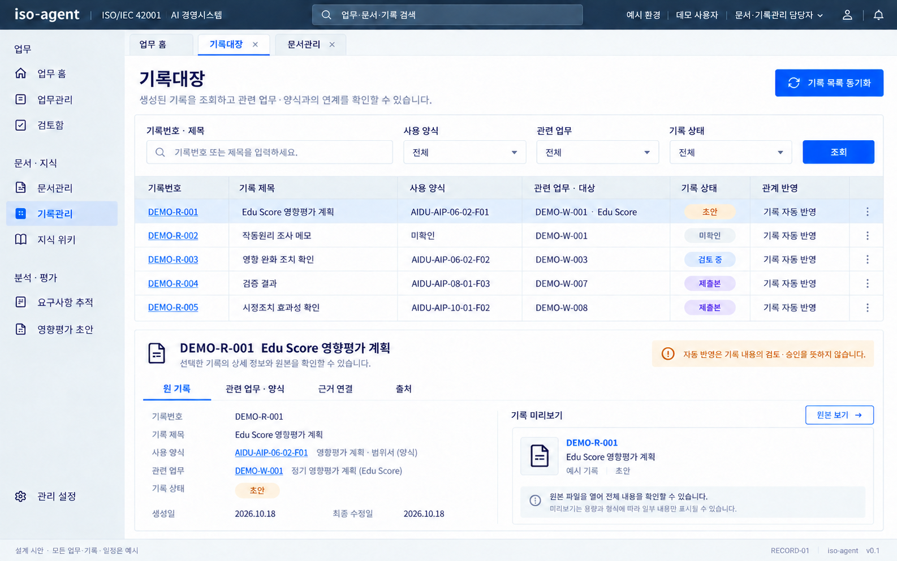
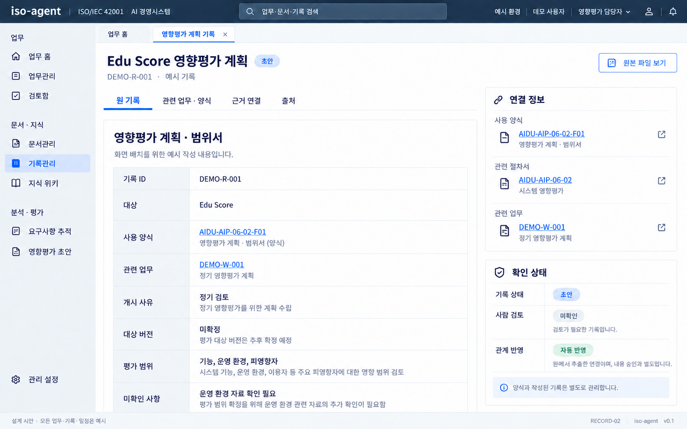
배치 재사용 · 원 기록·관계 근거·검토 상태, 업무 상세 진입 제외
예시 기록의 본문·사용 양식·관련 업무를 분리하고 검토 여부를 확인합니다.
원본 크기로 보기 ↗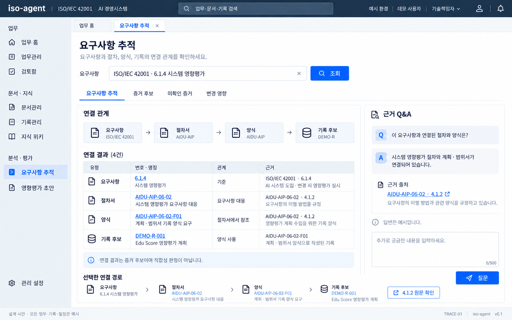
상세 확장 · 8.1의 분기 그래프·관계별 인용·독립 Q&A 적용
요구사항에서 문서·양식·증거 후보를 추적하고 답변 근거를 확인합니다.
원본 크기로 보기 ↗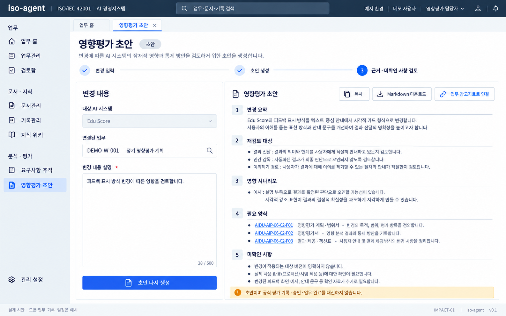
내용 재구성 · 8.2의 영향 집합·초안 분리, 업무 연결 제외
변경 내용을 바탕으로 초안과 근거를 검토하며 공식 평가·승인과 구분합니다.
원본 크기로 보기 ↗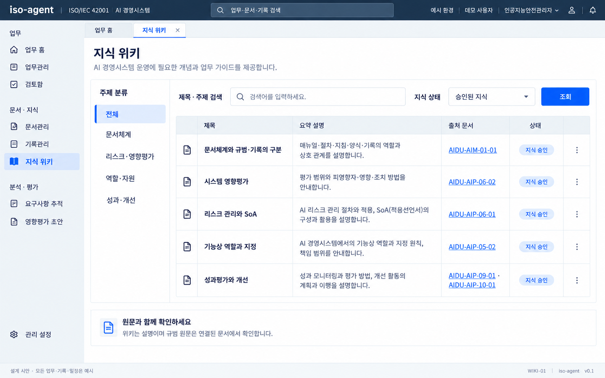
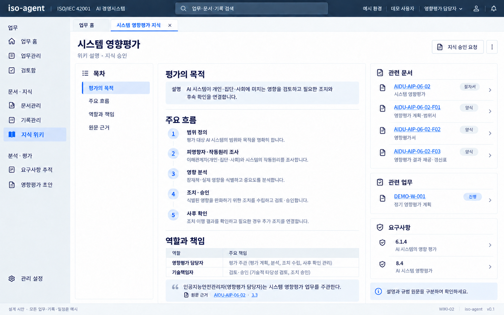
배치 재사용 · 설명·인용·원문 조회, 업무 링크·새 승인 요청 제외
설명·정확한 인용·원문 출처와 관련 문서를 함께 읽는 화면입니다.
원본 크기로 보기 ↗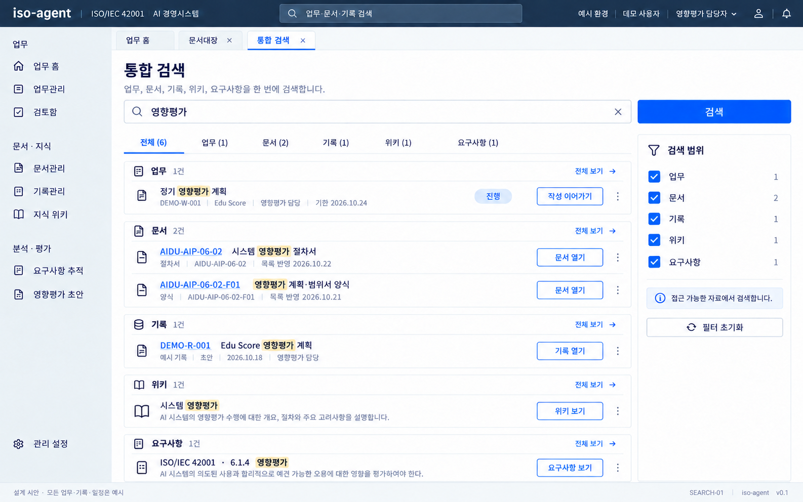